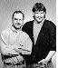
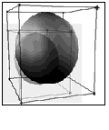
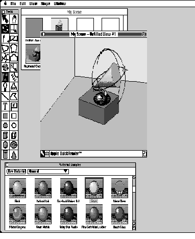
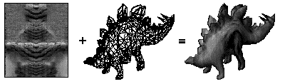
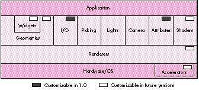
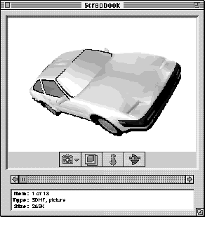
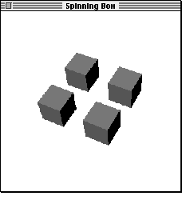
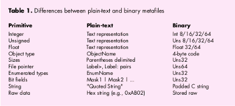
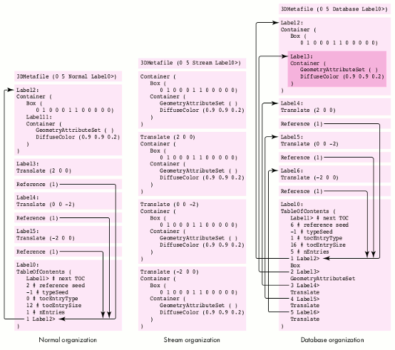

QuickDraw 3D is a new technology that helps developers bring 3D capabilities to their
applications. It runs on all Power Macintosh computers and offers high-performance
3D rendering and other features that make working with 3D data easier. This article
gives the basics you'll need to use QuickDraw 3D in your application, whether you're a
consummate 3D developer, a classic 2D application developer, or a game developer.
QuickDraw 3D is the newest enhancement to the Macintosh graphics architecture.
Developers have been requesting a 3D library, supported at the system level, since the
Macintosh was introduced. Although a number of Macintosh developers have produced
some amazing 3D applications, 3D graphics capabilities were relegated to niche
applications due to the lack of support at the core operating system level. QuickDraw
3D, which is expected to ship in mid-1995, brings the ability to deal with 3D
graphics to all Power Macintosh applications: not only can traditional 3D applications
take advantage of it, but it provides base functionality for general-purpose
applications as well.
QuickDraw 3D is a Code Fragment Manager-based shared library, with a C-based API.
Here we'll cover some concepts you need to know to get basic QuickDraw 3D support
into your application. This issue's CD contains a prerelease version of the QuickDraw
3D shared library, the 3D Viewer shared library, programming interfaces,
preliminary Inside Macintosh: QuickDraw 3D documentation, sample code, utility
libraries, and other goodies. Two of the sample programs are discussed in this article.
The API described in the article is based on a beta version of QuickDraw
3D; although nearly final, the API may change before the final release of the
software.
In addition, we'll talk about reading and writing data in QuickDraw 3D metafile format,
which is a way of representing 3D data in a consistent, transferable manner. But first
we'll set the stage with some background information.
As we'll explain further in this article, QuickDraw 3D provides developers with a
number of benefits:
We've made dealing with 3D data in applications easier with QuickDraw 3D. By
creating a standard for data interchange, with a well-rounded metafile definition,
we're enabling applications to read and write 3D data in a consistent format. The
metafile specification addresses requests from both end users (who couldn't exchange
data between applications in a common format) and developers (who had to write
special-case code to deal with several different file formats).
QuickDraw 3D comes with a set of human interface guidelines to foster the adoption of
a consistent look and feel between applications (see "The QuickDraw 3D Human
Interface"). 3D applications today are geared toward the trained 3D expert; what you
learn in one application is generally not transferable to another application. By
following the QuickDraw 3D human interface guidelines, however, developers can help
make 3D graphics an integral part of the user experience within their applications.
______________________________
THE QUICKDRAW 3D HUMAN INTERFACE
BY DAN VENOLIA
QuickDraw 3D provides human interface guidelines (in version 1.0) and a
toolkit for implementing the guidelines (to come in the second major release).
A sample application on this issue's CD illustrates our current ideas for a 3D
human interface. By getting a preview of our plans, you can start taking your
applications along the common path.
Our main goal is to provide integration into the Macintosh experience. We feel
that 3D graphics will be the next popular multimedia data type -- in the way
that 2D graphics, sound, and movies have been in the past -- and users will
want to incorporate 3D data into their documents in the same way that they can
now incorporate other multimedia data types. To do this they'll need an
interaction model built on the 2D principles that they're familiar with.
Our guidelines offer suggestions and examples of how things can be done. If
your applications are targeted for a very specific audience, and you know that
audience well, you may decide to communicate with them in a different way,
and that's perfectly OK.
One of our guidelines, about direct manipulation through the use of a widget, is
illustrated in Figure 1. Here we've appropriated the 2D grab handles that are
popular in many "draw" programs and extended them to 3D. A widget is a set of
handles for control of spatial parameters. Some widgets, such as the scale tool
shown in Figure 1, indicate selection of a shape, while others make an
invisible object, such as a light or a camera, visible.

Figure 1. A scaling widget
Figure 2 shows what a full-featured 3D application might look like. The
emphasis here is on what's the same as in 2D applications rather than on
what's unique. The illustration shows a shape selected with a rotation widget, a
material selection palette, a room metaphor, and a document containing
multiple views of a scene.

Figure 2. Conceptual sketch of a 3D application>
______________________________
QuickDraw 3D technology has been made possible in part by the dramatic performance
improvements in the Power Macintosh line of computers. The performance of
QuickDraw 3D is scalable across the Power Macintosh line; we've put in a lot of effort
to ensure that the performance on even entry-level computers is excellent. With
hardware acceleration, these computers can easily compete (and win) against
mid-range workstations costing a lot more money.
HOW QUICKDRAW 3D COMPARES WITH OTHER LIBRARIES
QuickDraw 3D offers many advantages over other 3D libraries. When using other
graphics libraries, you're on your own if, for instance, you want to change the way a
scene is rendered (say, by doing ray tracing or applying procedural shading): you have
to reimplement all of the 3D architecture. With QuickDraw 3D, you only have to write
code to deal with the specific area that you want to change. And, even better, the code
you write can be used as a plug-in by other applications.
Unlike some libraries, QuickDraw 3D will be able to take advantage of a number of 3D
hardware acceleration solutions, since acceleration was one of its design criteria.
Another important criterion was cross-platform support. For example, a renderer
could be written to take advantage of low-level 3D libraries, such as the Silicon
Graphics OpenGL graphics library.
The 3D application development process can be broken down into four areas: creation
of 3D data into a set of data structures, manipulation of that data in the human
interface of the application, presentation of the data by displaying it, and
transportation of the data (saving to and reading from files). QuickDraw 3D provides
support in each of these areas. You can implement one or more of them in your
application:

Figure 3. Dinosaur mesh mapped with a skin-like texture
The dinosaur model was supplied in QuickDraw 3D metafile format
courtesy of Viewpoint DataLabs Intl.
Based on our experience working with developers, we've created a road map for
adoption of QuickDraw 3D. Here we'll look at how different application developers
might begin to adopt QuickDraw 3D, in order from the least to the greatest amount of
support. These categories provide you with a general strategy for bringing QuickDraw
3D into your applications.
The QuickDraw 3D architecture isolates in a layer within the system software those
things that all developers have to do, leaving them to concentrate on the code that will
allow their application to stand out. This architecture can be thought of as a sandwich
filling that sits between your application and the hardware it's running on, isolating
you from having to deal with operating system and hardware issues directly. Like any
good sandwich filling, if you examine it closely, you'll see that it's divided into a
number of appetizing chunks. Figure 4 shows some of the functional blocks that make
up QuickDraw 3D, with an emphasis on those areas that can be customized by
developers.

Figure 4. QuickDraw 3D architecture
Let's take a quick look at each of these functional areas, which we'll expand on later.
Here we'll use the word scene to describe not only the objects being modeled, but also
the lighting, camera settings, shaders, and other entities that affect the final
appearance on output devices.
Widgets are used to enhance the user experience for 3D applications. For example, to
allow the user to interact with an object, the application can draw grab handles, in the
form of a translation widget, to allow the object to be manipulated.
Geometries are the encapsulation of data used to describe an object. Some geometries
are provided as part of QuickDraw 3D, resulting in a very concise representation; for
more information, see "QuickDraw 3D Geometries." (QuickDraw 3D uses geometries to
draw widgets.)
______________________________
QUICKDRAW 3D GEOMETRIES
The QuickDraw 3D geometries that are currently available are as follows:
line, polyline, triangle, point, simple polygon, general polygon, trigrid,
mesh, box, marker, NURB curve, and patch.
In addition, the following geometries are planned for the second major release
of QuickDraw 3D: torus, ellipse, ellipsoid, disk, cylinder, cone, and triangle
strip. (In version 1.0, you can create any of these geometries by representing
them as meshes.)
Where applicable, the geometries are parameterized so that they're ready for
texture mapping or other shading effects.
______________________________
The I/O layer provides support for metafiles. There are routines for reading and
writing 3D data to Storage objects, which may be disk or memory based and are useful
for providing Clipboard or drag and drop support in your application.
Picking is used to determine which object a user chose. QuickDraw 3D's picking
facilities are more extensive than in other 3D libraries, not only providing several
different types but also returning quite a bit of information to the application beyond
whether a hit took place.
Light objects supply the lighting for a scene. QuickDraw 3D provides four types of
light sources: ambient, directional, point, and spot. Based on the light sources for a
given scene and the illumination shader, the renderer makes intensity calculations for
each object's surface and vertex contained in the scene.
Camera objects define a point of view into a particular scene. QuickDraw 3D provides
three different camera types: view angle, orthographic, and view plane.
Attributes are used to specify different characteristics for each object (or parts of an
object, such as its vertices or faces), and also to attach custom data to an object.
Shaders are used to modify or add data, on either a per vertex or a per pixel basis, as
geometries are being processed by the renderer -- for example, illumination and
texturing shaders.
Renderers are the business end of QuickDraw 3D. A renderer is a set of routines used
to create a shaded synthetic model of the scene, based on the information stored in the
geometry and taking into account the lighting, surface attributes, and camera location.
QuickDraw 3D provides two basic renderers: a wireframe and an interactive renderer.
You can extend QuickDraw 3D by writing a plug-in renderer, developing an
accelerator card, or implementing a combination of both -- a renderer tied to a
particular hardware setup.
Now, on to the coding details. We realized that some application developers wouldn't
want to get involved with the low-level details of a new API. We looked at the
QuickTime model and saw that a lot of developers implemented support for viewing
movie data by using movie controllers in their existing nonmultimedia applications.
We likewise wanted to allow applications to support the viewing of QuickDraw 3D
metafiles with minimal effort, so we've provided an additional shared library that
implements a 3D Viewer. The Viewer allows users to view and have a basic level of
interaction with 3D data without your having to make any QuickDraw 3D calls. Figure
5 shows a Viewer implementation in a modified version of the Scrapbook. (We used a
preliminary version, so the Viewer interface may change.)

Figure 5. Viewer implementation in the Scrapbook
The car model was supplied in QuickDraw 3D metafile format courtesy of
Viewpoint DataLabs Intl.
Adding Viewer support is simple -- it requires only about five function calls. Your
application can check to see if the Viewer is available by calling Gestalt with the
constant gestaltQuickDraw3DViewer.
We'll now look at how your application can create and use a QuickDraw 3D Viewer
object. In the application named Simple 3D Viewer on this issue's CD, we create a
window in which the only object is a Viewer.
As you read through the code samples, you'll notice that function names
have a "Q3" prefix, data types have a "TQ3" prefix, and constants have a "kQ3"
prefix. The part of a function name before the underscore indicates the object
being operated on (the class), while the part after the underscore indicates
the operation (the method). For example, to set the origin of a Box object,
you'd call the function Q3Box_SetOrigin.
CREATING AND DISPOSING OF A VIEWER OBJECT
Creating and disposing of a Viewer object is very easy to do. You attach a Viewer to a
window with the Q3ViewerNew function:
viewerObj = Q3ViewerNew((CGrafPtr)theWindow, &theRect, 0L);
This function takes a WindowPtr, a pointer to a Rect that describes the window area
where you want the 3D scene to appear, and a long word containing flags for modifying
the behavior of the Viewer. When you're finished with the Viewer, you need to dispose
of it with the Q3ViewerDispose function:
Q3ViewerDispose(viewerObj);
ATTACHING DATA TO THE VIEWER
To display the contents of a metafile in your Viewer, you can use the Q3ViewerUseFile
function:
Q3ViewerUseFile(viewerObj, fileRefNum);
Q3ViewerUseFile takes a reference to the Viewer object and a file reference to a
previously opened QuickDraw 3D metafile. You can also display data from the
Clipboard or data you created yourself, with the Q3ViewerUseData function:
Q3ViewerUseData(viewerObj, myDataPtr, myDataSize);
This function takes a reference to a Viewer object, a pointer to the data, and the size of
the data in bytes. The data must be in metafile format.
HANDLING EVENTS
You need to modify your event loop slightly to give the Viewer the opportunity to
handle events, as follows:
wasViewerEvent = Q3ViewerEvent(viewerObj, theEvent);
Q3ViewerEvent takes a reference to a Viewer object and a pointer to an event record
(usually obtained from WaitNextEvent). This function allows the Viewer to respond to
events, such as a mouse-down event in one of its controls. It returns a value of type
Boolean that indicates whether the event was handled.
If the area occupied by the Viewer needs to be updated, you need to redraw the data in
your update event handler by calling Q3ViewerDraw:
theErr = Q3ViewerDraw(viewerObj);
OTHER VIEWER FUNCTIONALITY
The Viewer allows access to the View object for the scene, which enables you to
customize the Viewer's behavior by changing the renderer or lighting for the scene
(more on Views later). Also, the Viewer provides support for cut, copy, and paste; see
the Simple 3D Viewer sample on the CD for an example.
Now let's look at programming with the QuickDraw 3D API, starting with error
checking and initialization. First, the QuickDraw 3D shared library needs to be
installed in the Extensions folder or in the same folder as your project. During your
development cycle you should use the debugging version of the library for extensive
error checking.
Error checking may seem like a weird place to start, but checking and responding to
what QuickDraw 3D is trying to tell you will save a great deal of trouble and strife
during development. The QuickDraw 3D error manager provides several levels of
error checking along with functions for checking the last error that occurred. The
error checking, which is similar to that in QuickDraw GX, has three levels: errors,
warnings, and notices.
TQ3Boolean Q3Error_IsFatalError(TQ3Error theError);
For a complete list of errors provided by QuickDraw 3D, look in the
QuickDraw 3D header files.
You can install your own error, warning, and notice handlers, which can write the
error information to a window or file or present a dialog or alert. Presenting too many
alerts can be annoying to the user, so you should probably log errors, warnings, and
notices to a file or a status window, and present a dialog or an alert only for fatal
errors from which no recovery is possible.
DEFINING AND INSTALLING AN ERROR HANDLER
Handlers for errors, warnings, and notices are all similar -- they're functions that
take an error code of type TQ3Error and have no return value. Listing 1 shows a
definition of an error handler.
Listing 1. Error handler
static void MyErrorHandler(TQ3Error firstError, TQ3Error lastError,
long refCon)
{
char buf[512];
sprintf(buf, "ERROR %d - %s\n", lastError,
getErrorString(lastError)); // Get the error as a C string.
if (gErrorFile == NULL)
gErrorFile = fopen("error.output", "w+");
if (gErrorFile != NULL)
fputs(buf, gErrorFile);
}
Once handlers have been defined, it's a snap to install them. For example, you would
install the error handler defined in Listing 1 as follows:
Q3Error_Register(MyErrorHandler, 0L);
INITIALIZING QUICKDRAW 3D
Before you can use QuickDraw 3D, you need to call Gestalt to see if the library is
installed, using the constant gestaltQuickDraw3D. You then need to initialize the
library as shown in Listing 2. You call the Q3Initialize function to ensure that the
QuickDraw 3D library gets a chance to allocate its internal data structures and to
initialize any subcomponents (such as plug-in shaders) that it needs to call. You then
do other initialization as needed, such as installing an error handler. The return value
indicates whether the call was successful.
Listing 2. Initializing and closing the connection to the library
void Initialize3DStuff(void)
{
if (Q3Initialize() == kQ3Failure) {
// Handle the error.
StopAlert(kQD3DInitFailed);
ExitToShell();
}
MyErrorInit();
}
void Exit3DStuff(void)
{
if (Q3Exit() == kQ3Failure) {
// Handle the error.
StopAlert(kQD3DExitFailed);
ExitToShell();
}
}
When your application is about to quit, you should shut down your connection to the
QuickDraw 3D library by calling Q3Exit, also shown in Listing 2. (Obviously a real
application would have more sophisticated error handling here.)
The Box application on this issue's CD is a simple QuickDraw 3D program that opens a
window, displays 3D boxes in the window, and rotates the boxes (see Figure 6). While
this isn't a useful application as such, it covers all the basics needed to create and
display objects using QuickDraw 3D. It also illustrates double buffering support,
which helps an application provide flicker-free drawing when animating geometries;
QuickDraw 3D's double buffering takes advantage of hardware double buffering when
available.

Figure 6. A window from the Box sample program
For a more complex example, see the Modeller program on the CD, which
shows most of the things a QuickDraw 3D application needs to do, such as
reading and writing metafiles, texture mapping, and using interpolation
styles.
We define the following data structure to store the information that QuickDraw 3D
needs to model and render our scene:
struct _documentRecord {
TQ3ViewObject fView; // The view for the scene
TQ3GroupObject fModel; // Object in scene being modeled
TQ3StyleObject fInterpolation; // Style used when rendering
TQ3StyleObject fBackFacing; // Whether to draw shapes that
// face away from the camera
TQ3StyleObject fFillStyle; // Drawn as solid filled objects
// or decomposed to components
TQ3Matrix4x4 fRotation; // The transform for the model
};
typedef struct _documentRecord DocumentRec, *DocumentPtr,
**DocumentHdl;
We can create a new instance of this type, initialize it with the required values, and
store a reference to it in each window's refCon field.
OBJECT CREATION
Creating a simple object -- like a box -- is straightforward. We'll make four copies
of the box, each with its own transform. The code to create these boxes is shown in
Listing 3. We can store the boxes in our document simply by storing the value
returned by this function in our document's fModel field.
Listing 3. Creating four boxes
TQ3GroupObject MyNewModel()
{
TQ3GroupObject myGroup;
TQ3GeometryObject myBox;
TQ3BoxData myBoxData;
TQ3GroupPosition myGroupPosition;
TQ3ShaderObject myIlluminationShader;
TQ3Vector3D translation;
TQ3SetObject faces[6];
short face;
// Create a group for the complete model.
if ((myGroup = Q3DisplayGroup_New()) != NULL) {
// Define a shading type for the group and add the shader to
// the group.
myIlluminationShader = Q3PhongIllumination_New();
Q3Group_AddObject(myGroup, myIlluminationShader);
// Set up the colored faces for the box data.
myBoxData.faceAttributeSet = faces;
myBoxData.boxAttributeSet = nil;
MyColorBoxFaces(&myBoxData);
// Create the box itself.
Q3Point3D_Set(&myBoxData.origin, 0, 0, 0)
Q3Vector3D_Set(&myBoxData.orientation, 0, 1, 0);
Q3Vector3D_Set(&myBoxData.majorAxis, 0, 0, 1);
Q3Vector3D_Set(&myBoxData.minorAxis, 1, 0, 0);
myBox = Q3Box_New(&myBoxData);
// Put four references to the box into the group, each one with
// its own translation.
translation.x = 0; translation.y = 0; translation.z = 0;
MyAddTransformedObjectToGroup(myGroup, myBox, &translation);
translation.x = 2; translation.y = 0; translation.z = 0;
MyAddTransformedObjectToGroup(myGroup, myBox, &translation);
translation.x = 0; translation.y = 0; translation.z = -2;
MyAddTransformedObjectToGroup(myGroup, myBox, &translation);
translation.x = -2; translation.y = 0; translation.z = 0;
MyAddTransformedObjectToGroup(myGroup, myBox, &translation);
}
// Dispose of the objects we created here.
if (myIlluminationShader != NULL)
Q3Object_Dispose(myIlluminationShader);
for (face = 0; face < 6; face++) {
if (myBoxData.faceAttributeSet[face] != NULL)
Q3Object_Dispose(myBoxData.faceAttributeSet[face]);
}
if (myBox != NULL)
Q3Object_Dispose(myBox);
return myGroup;
}
Notice that we dispose of the boxes after adding them to the document group. QuickDraw
3D will create references to the boxes in the document group, so we can safely dispose
of them. To be good QuickDraw 3D citizens and to make more effective use of memory,
we need to dispose of each QuickDraw 3D object as soon as we're done with it.
QuickDraw 3D keeps track of the reference count of each object to help detect memory
leaks. If you're using the debugging version of QuickDraw 3D, it will tell you when you
call Q3Exit if there are any objects remaining that need to be disposed of.
RETAINED AND IMMEDIATE MODE RENDERING
We talked earlier about retained and immediate modes. Which mode to use is the
subject of big philosophical arguments in the world of 3D graphics. Some developers
prefer one over the other as a matter of principle; other developers make a choice
based on the type of application being developed. QuickDraw 3D offers the best of both
worlds: not only does it support both ways of rendering geometric data, it also allows
you to mix these types in the same rendering loop.
Retained and immediate modes are simply methods of rendering, without
the usual connotation of the term "mode" (a state that you must exclusively
remain in once you get into it). Although this terminology has become common
in the field of 3D graphics, retained rendering and immediate rendering calls
can in fact be freely mixed.
In retained mode, the definition and storage of the geometries are kept internal to
QuickDraw 3D (as an abstract object). This mode provides convenient features for
caching, rejection of entire objects based on clipping and culling, preservation of
tessellated surfaces, multiple instantiation of objects (drawing multiple versions of
an object but storing its definition only once), and conversion between geometry types.
Retained mode is useful when the geometry has to be passed around to different modules
within the application or to plug-in renderers. Extensive geometry editing functions
are provided as part of the QuickDraw 3D API, which makes it easy to alter the data
associated with each geometric object.
In immediate mode, the application keeps the only copy of the geometry. This is
particularly useful when your application needs to reference data that's in a format
different from the one used by QuickDraw 3D or when a large number of vertices that
make up the geometry are being edited continuously -- for example, in the animation
of a stress analysis for mechanical design.
The code in Listing 3 creates the boxes in retained mode, by creating objects that
encapsulate the box data; QuickDraw 3D then manages the box data for us. If you want
to add QuickDraw 3D rendering and drawing to an existing application with its own 3D
data structures, you can draw in immediate mode instead. To draw a box in immediate
mode, you simply initialize the values in the TQ3BoxData structure to the appropriate
values and then draw the data directly in a rendering loop (described later) by calling
the following function:
myStatus = Q3Box_Submit(&myBoxData);
Because you never create a QuickDraw 3D object, there's no need to call
Q3Object_Dispose.
Notice that in Listing 3 we initialize an object using a data structure of
type TQ3BoxData. This structure contains all of the information required to
draw a Box geometry, but is not an object in itself. Because of this we don't
call Q3Object_Dispose on the box data structure, but we do call it on the Box
object.
THE DRAW CONTEXT
All window system dependencies are isolated to a layer we call the draw context. This
makes porting your application easier (and it also makes it easier for us to port
QuickDraw 3D to other platforms). Although QuickDraw 3D is platform independent,
of course at some point you'll need to deal with the realities of a particular platform's
window system, in this case the Mac OS.
This is where the concept of a draw context comes in. It's a means for QuickDraw 3D
to interface with the host environment. There's a special draw context for the Mac OS,
called a Macintosh draw context; information describing this context is stored in a
TQ3MacDrawContext object, which contains the information necessary for QuickDraw
3D to image the data on a computer running the Mac OS.
Listing 4 is a routine from the Box application that creates a Macintosh draw context
the size of a window that we pass in. We're telling QuickDraw 3D to create a buffer in
which to image the data; this is referred to as the back buffer. If we're using double
buffering (that is, we set the doubleBufferState field of the Macintosh draw context to
true), the front buffer will be the window associated with the draw context. The data is
copied from the back buffer to the front buffer when Q3View_EndRendering is called.
This helps provide flicker-free animation if you're animating the object being viewed.
Listing 4. Creating a Macintosh draw context
TQ3DrawContextObject MyNewDrawContext(WindowPtr theWindow)
{
TQ3DrawContextData myDrawContextData;
TQ3MacDrawContextData myMacDrawContextData;
TQ3DrawContextObject myDrawContext;
TQ3ColorRGB clearColor;
Q3ColorRGB_Set(&clearColor, 1, 1, 1);
myDrawContextData.clearImageState = kQ3True;
myDrawContextData.clearImageMethod = kQ3ClearMethodWithColor;
myDrawContextData.clearImageColor = clearColor;
myDrawContextData.paneState = kQ3False;
myDrawContextData.maskState = kQ3False;
myDrawContextData.doubleBufferState = kQ3True;
myMacDrawContextData.drawContextData = myDrawContextData;
myMacDrawContextData.window = (CGrafPtr) theWindow;
// The window associated with the view
myMacDrawContextData.library = kQ3Mac2DLibraryNone;
myMacDrawContextData.viewPort = nil;
myMacDrawContextData.grafPort = nil;
// Create draw context and return it; if nil, caller must handle
// it.
myDrawContext = Q3MacDrawContext_New(&myMacDrawContextData);
return myDrawContext;
}
Sometimes you might want to be able to get at the back buffer yourself; for example,
you might want to create a picture preview of some metafile data to place on the
Clipboard along with the metafile data, so that applications that don't support metafiles
can display the picture. QuickDraw 3D makes this possible by providing a different
type of draw context, called a pixmap draw context, which can be based on a GWorld.
First you need to create a GWorld the size of the window area; then you can create a
pixmap draw context as shown in Listing 5.
Listing 5. Creating a pixmap draw context
TQ3DrawContextObject MyNewPixmapDrawContext(GWorldPtr theGWorld)
{
TQ3PixmapDrawContextData myPixmapDCData;
TQ3ColorRGB clearColor;
PixMapHandle hPixMap;
Rect srcRect;
Q3ColorRGB_Set(&clearColor, 1, 1, 1);
// Fill in the draw context data.
myPixmapDCData.drawContextData.clearImageState = kQ3True;
myPixmapDCData.drawContextData.clearImageMethod =
kQ3ClearMethodWithColor;
myPixmapDCData.drawContextData.clearImageColor = clearColor;
myPixmapDCData.drawContextData.paneState = kQ3False;
myPixmapDCData.drawContextData.maskState = kQ3False;
myPixmapDCData.drawContextData.doubleBufferState = kQ3False;
hPixMap = GetGWorldPixMap(theGWorld);
LockPixels(hPixMap);
srcRect = theGWorld->portRect;
myPixmapDCData.pixmap.width = srcRect.right - srcRect.left;
myPixmapDCData.pixmap.height = srcRect.bottom - srcRect.top;
myPixmapDCData.pixmap.rowBytes = (**hPixMap).rowBytes & 0x7FFF;
myPixmapDCData.pixmap.pixelType = kQ3PixelTypeRGB32;
myPixmapDCData.pixmap.pixelSize = 32;
myPixmapDCData.pixmap.bitOrder = kQ3EndianBig;
myPixmapDCData.pixmap.byteOrder = kQ3EndianBig;
myPixmapDCData.pixmap.image = (**hPixMap).baseAddr;
return Q3PixmapDrawContext_New(&myPixmapDCData);
}
When using a pixmap draw context, you must keep the GWorld's PixMap locked all the
time (which implies that you need to call LockPixels on it, to help avoid heap
fragmentation). Also, the PixMap must be 32 bits deep -- other depths are not
supported.
THE CAMERA
A camera is a QuickDraw 3D object used to project a 3D scene onto a 2D plane. It
defines a point of view on the scene and a method of projection onto the viewing plane.
QuickDraw 3D provides three types of camera:
We use a view angle camera for the Box application, creating the camera with the
routine in Listing 6.
Listing 6. Creating the camera
TQ3CameraObject MyNewCamera(WindowPtr theWindow)
{
TQ3ViewAngleAspectCameraData perspectiveData;
TQ3CameraObject camera;
TQ3Point3D from = { 0.0, 0.0, 13.0 };
TQ3Point3D to = { 0.5, 0.5, -1.5 };
TQ3Vector3D up = { 0.0, 1.0, 0.0 };
float fieldOfView = 0.523593333;
float hither = 0.001;
float yon = 1000;
perspectiveData.cameraData.placement.cameraLocation = from;
perspectiveData.cameraData.placement.pointOfInterest = to;
perspectiveData.cameraData.placement.upVector = up;
perspectiveData.cameraData.range.hither = hither;
perspectiveData.cameraData.range.yon = yon;
perspectiveData.cameraData.viewPort.origin.x = -1.0;
perspectiveData.cameraData.viewPort.origin.y = 1.0;
perspectiveData.cameraData.viewPort.width = 2.0;
perspectiveData.cameraData.viewPort.height = 2.0;
perspectiveData.fov = fieldOfView;
perspectiveData.aspectRatioXToY =
(float)(theWindow->portRect.right - theWindow->portRect.left) /
(float)(theWindow->portRect.bottom - theWindow->portRect.top);
camera = Q3ViewAngleAspectCamera_New(&perspectiveData);
return camera;
}
LIGHTING
QuickDraw 3D includes a number of different light objects that can be used to provide
illumination to the surfaces in a scene. Lighting is additive, meaning that the amount of
lighting applied to a particular surface will be the sum of the lighting from all
sources. There are four light types:
Listing 7 shows an extract from our sample's MyNewLights routine; here we create a
point light and add it to a light group.
Listing 7. Creating a point light in a light group
lightGroup = Q3LightGroup_New(); pointData.lightData.isOn = kQ3True; pointData.lightData.brightness = 0.80; pointData.lightData.color.r = 1.0; pointData.lightData.color.g = 1.0; pointData.lightData.color.b = 1.0; pointData.location.x = -10.0; pointData.location.y = 0.0; pointData.location.z = 10.0; pointData.castsShadows = kQ3False; pointData.attenuation = kQ3AttenuationTypeNone; light = Q3PointLight_New(&pointData); Q3Group_AddObject(lightGroup, light);
Q3Object_Dispose(light);
THE VIEW
Once you've added the light to a group, you can associate the group with the View object
for your scene. A View object keeps track of the information necessary to render an
entire scene, tying together the different parts of QuickDraw 3D. In our simple
example it ties together the draw context, camera, lights, and renderer. Listing 8
shows the code we use to create the View object for the Box program.
Listing 8. Creating the View object
TQ3ViewObject MyNewView(WindowPtr theWindow)
{
TQ3Status myStatus;
TQ3ViewObject myView;
TQ3DrawContextObject myDrawContext;
TQ3RendererObject myRenderer;
TQ3CameraObject myCamera;
TQ3GroupObject myLights;
myView = Q3View_New();
// Create and set the draw context.
myDrawContext = MyNewDrawContext(theWindow);
myStatus = Q3View_SetDrawContext(myView, myDrawContext);
Q3Object_Dispose(myDrawContext);
// Create and set the renderer. Use the interactive software
// renderer.
myRenderer = Q3Renderer_NewFromType(kQ3RendererTypeInteractive);
myStatus = Q3View_SetRenderer(myView, myRenderer);
Q3Object_Dispose(myRenderer);
// Create and set the camera.
myCamera = MyNewCamera(theWindow);
myStatus = Q3View_SetCamera(myView, myCamera);
Q3Object_Dispose(myCamera);
// Create and set the lights.
myLights = MyNewLights();
myStatus = Q3View_SetLightGroup(myView, myLights);
Q3Object_Dispose(myLights);
return myView;
}
THE RENDERING LOOP
All drawing must be done in a rendering loop. This is necessary because we don't know
in advance how much memory is required to render a complex model. The loop should
fit neatly into your application, because most Macintosh applications will localize
drawing in the update event-handling code, which is where you'll call your rendering
loop for QuickDraw 3D. A simple rendering loop will look like Listing 9.
Listing 9. The rendering loop
TQ3Status DocumentDraw3DData(DocumentPtr theDocument)
{
Q3View_StartRendering(theDocument->fView);
do {
Q3Style_Submit(theDocument->fInterpolation,
theDocument->fView);
Q3Style_Submit(theDocument->fBackFacing, theDocument->fView);
Q3Style_Submit(theDocument->fFillStyle, theDocument->fView);
Q3MatrixTransform_Submit(&theDocument->fRotation,
theDocument->fView);
Q3DisplayGroup_Submit(theDocument->fModel, theDocument->fView);
} while (Q3View_EndRendering(theDocument->fView)
== kQ3ViewStatusRetraverse);
return kQ3Success;
}
Recall that earlier we set up our Macintosh draw context to use double buffering; this
causes all drawing to take place in the back buffer. The calls in the rendering loop
draw into the active buffer, which we have set up to be the back buffer. The image data
is copied from the back buffer to the front buffer (in this case the window) when
Q3View_EndRendering is called.
A rendering loop for a pixmap draw context would be similar to the routine in Listing
9, except you would need to copy the data from your PixMap to the screen yourself,
generally with CopyBits.
Here we'll take a brief look at the architecture of QuickDraw 3D's metafile format
(file type '3DMF') and at how you can provide metafile support in your application.
The QuickDraw 3D metafile comes in two forms: plain-text (ASCII) and binary. Table
1 shows the differences between these two forms. The plain-text form is more useful
for debugging purposes; once your application is debugged, it's more efficient to use
the binary form, which may be read and written much faster and may require less
storage space on disk.

The metafile format supports a wide range of primitive data types, including 1-, 2-,
4-, and 8-byte signed and unsigned integers and 4- and 8-byte IEEE floating-point
numbers, together with a range of types for describing 3D data. In addition, metafiles
may contain big- or little-endian numbers, making them ideal for storing data that
may be used in a cross-platform manner.
METAFILE ORGANIZATION
There are three distinct types of metafile organization: normal, stream, and database.
The organization of the file can affect both the size of the file and the time it takes to
access the data in the file. Let's look at a simple example in which a single Box object
is drawn four times at different positions by means of four different Transform
objects, as was shown in Figure 6. The three types of organization are illustrated in
Figure 7. (Note that # marks the beginning of a comment.) These types are as follows:

Figure 7. Three types of metafile organization (representing Figure 6)
USING METAFILES
The simplest way to access data in metafiles is to use the QuickDraw 3D API. First,
there are two types of objects you need to understand:
Why have this two-stage approach? The answer is that all the machine dependencies
are localized in the Storage object, which allows files to be used to read and write data
from differing types of physical storage with the same set of routines. For example,
you can use the same File object to write to a Storage object that represents a file on
your hard disk and to write to another Storage object that represents a block of
memory that will be passed to the Scrap Manager.
The usual method for using File and Storage objects is to create a new instance of a
Storage object and attach it to a newly created File object using Q3File_SetStorage, as
shown in Listing 10.
Listing 10. Attaching a Storage object to a file
TQ3FileObject MyGetNewFile(FSSpec *myFSSpec, TQ3Boolean *isText)
{
TQ3FileObject myFileObj;
TQ3StorageObject myStorageObj;
OSType myFileType;
FInfo fndrInfo;
// We assume the FSSpec passed in was valid and get the file
// information. We need to know the file type; this routine may
// get called by an Apple-event handler, so we can't assume a
// type -- we need to get it from the FSSpec.
FSpGetFInfo(myFSSpec, &fndrInfo);
myFileType = fndrInfo.fdType;
if (myFileType == '3DMF')
*isText = kQ3False;
else if (myFileType == 'TEXT')
*isText = kQ3True;
else
return NULL;
// Create a new Storage object and new File object.
if (((myStorageObj = Q3FSSpecStorage_New(myFSSpec)) == NULL)
|| ((myFileObj = Q3File_New()) == NULL)) {
if (myStorageObj != NULL)
Q3Object_Dispose(myStorageObj);
return NULL;
}
// Set the storage for the File object.
Q3File_SetStorage(myFileObj, myStorageObj);
Q3Object_Dispose(myStorageObj);
return myFileObj;
}
Reading data from metafiles. There are three routines that you can use to help
with reading the data: Q3File_GetNextObjectType, Q3File_ReadObject, and
Q3File_SkipObject. Listing11 illustrates the technique used to read drawable data
from a metafile. The code loops through the file, getting each object and checking to see
if the object is drawable; if so, it adds the object to a group object. Listing 11.
Reading from a metafile
TQ3Status MyReadModelFromFile(TQ3FileObject theFile, TQ3GroupObject
myGroup)
{
if (theFile != NULL) {
TQ3Object myTempObj;
TQ3Boolean isEOF;
// Read objects from the file.
do {
Q3File_ReadObject(theFile, &myTempObj);
if (myTempObj != NULL) {
// We want the object in our main group only if we can
// draw it.
if (Q3Object_IsDrawable(myTempObj))
Q3Group_AddObject(myGroup, myTempObj);
// We either added the object to the main group, or we
// don't care, so we can safely dispose of it.
Q3Object_Dispose(myTempObj);
}
// Check to see if we've reached the end of the file yet.
Q3File_IsEndOfFile(theFile, &isEOF);
} while (isEOF == kQ3False);
}
if (myGroup != NULL)
return kQ3Success;
else
return kQ3Failure;
}
Because we're isolating the implementation details of how the metafile data is stored in
the Storage object that we associated with the File object at its creation time, we don't
care how the metafile data we're reading is physically stored. What this means is that
we could use the routine above to read data from the scrap, from a handle supplied by
the Drag Manager, or from a file, as long as the storage object attached to the file is set
up properly.
Writing data to metafiles. Data is written to files similarly to the way it's drawn
in a rendering loop. Depending on the available memory and the complexity of the
model, QuickDraw 3D may need to traverse the model in the group more than once in
order to write all the data out (this is the same reason that the rendering needs to be
done in a loop). As shown below, you need to preface your file-writing loop with a call
to Q3File_BeginWrite, and test the value returned by Q3File_EndWrite to see if
there's a need to traverse the data again.
Q3File_OpenWrite(file, kQ3FileModeNormal);
Q3File_BeginWrite(file);
do {
Q3Object_Write(group, file);
} while (Q3File_EndWrite(file) == kQ3FileStatusRetraverse);
Q3File_Close(file);
QuickDraw 3D lowers the bar for application developers who want to put support for
3D data into their applications. By providing support for the features that all
developers need to have in applications -- geometries, metafile support, rendering,
and human interface -- QuickDraw 3D allows you to concentrate on the features and
facilities that set your application apart.
PABLO FERNICOLA (AppleLink PFF, eWorld EscherDude) After spending many
years working in 3D graphics under operating systems named **IX, in a faraway land
called Alabama, Pablo made the transition to real computers. After moving to Silicon
Valley, he learned to beat the traffic jams by getting to work before 8 A.M. and going
home after 10 P.M. Now he can be found staring out the window and wondering how he's
going to get home on Interstate 280 after the next earthquake.
NICK THOMPSON (AppleLink NICKT) is currently establishing himself as the
Mountain Dew-guzzling fat fool of Developer Technical Support. Unable to work the
winter blubber off due to killer waves that are preventing him from surfing on the
California coast, Nick has been consoling himself with learning the wonder that is
QuickDraw 3D. He was last seen wandering down one of the corridors at Apple
mumbling to himself.
Thanks to our technical reviewers Kent Davidson, Eiichiro Mikami, Don Moccia, and
Dan Venolia, and to all the members of the QuickDraw 3D team. Special thanks to Kent
and Dan for supplying information used in this article and to David Vasquez for his
Viewer sample. Thanks also to the Shawn and John team (Shawn Hopwood, Apple's 3D
evangelist, and our marketing weenie, John Alfano) for their input.